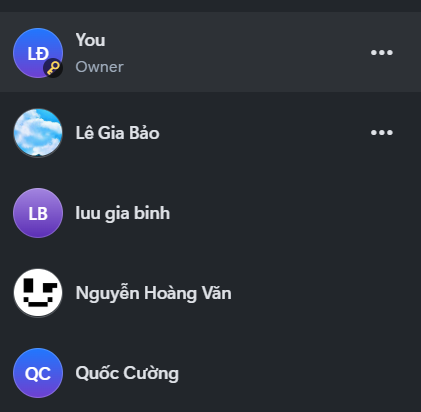
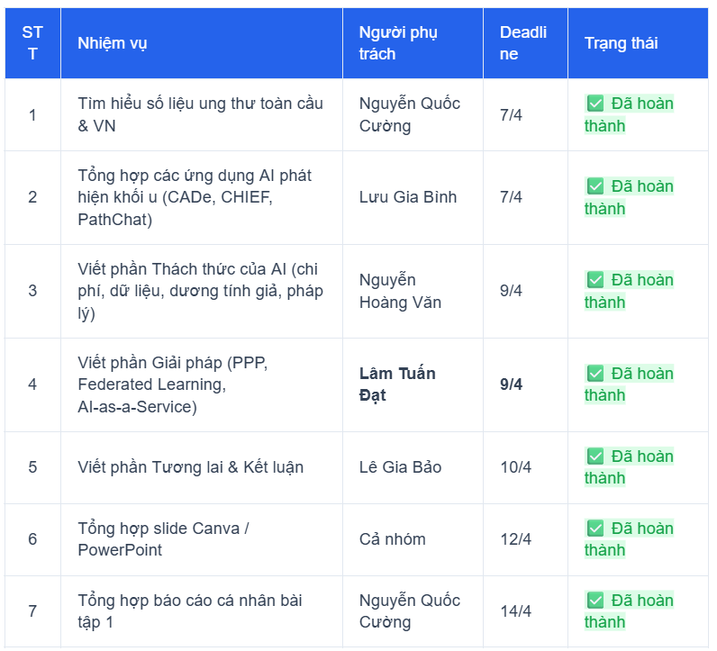
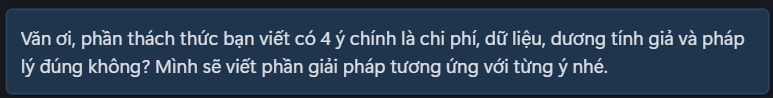
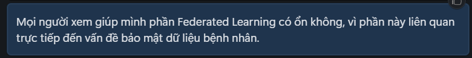
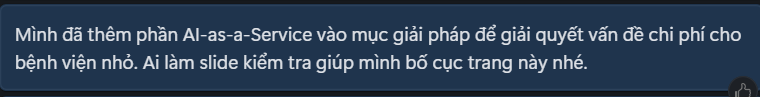
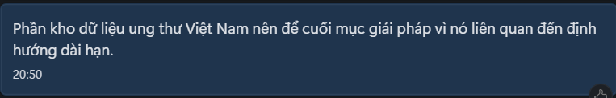
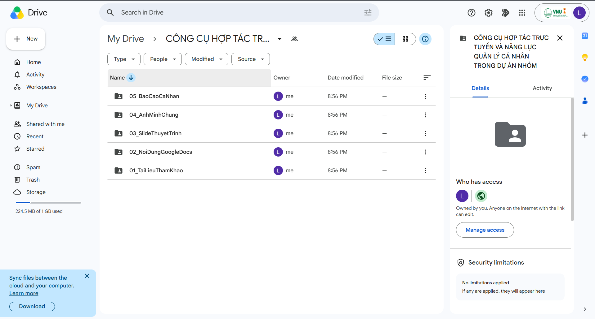

Mục tiêu & Tóm tắt
Thành thạo các công cụ hợp tác trực tuyến và thể hiện năng lực quản lý, điều phối cá nhân trong dự án nhóm.
Qua dự án này, mình nhận thấy việc sử dụng công cụ hợp tác trực tuyến không chỉ giúp nhóm làm việc nhanh hơn mà còn giúp từng thành viên kiểm soát rõ phần việc của mình. Với vai trò phụ trách phần “Giải pháp”, mình phải theo dõi nội dung của các bạn khác, đặc biệt là phần “Thách thức của AI”, để đề xuất giải pháp phù hợp và có tính liên kết.
- Tên dự án AI trong ung thư học - Từ chẩn đoán chính xác đến phẫu thuật thông minh
- Vai trò của tôi Viết phần Giải pháp ứng dụng AI trong ung thư học, gồm PPP, Federated Learning, AI-as-a-Service và xây dựng kho dữ liệu ung thư Việt Nam.
- Thời gian thực hiện Tuần 1, từ 7/4 đến 14/4/2026.
I. Các công cụ hợp tác trực tuyến đã sử dụng
Nhóm tôi gồm 5 thành viên, thực hiện dự án nghiên cứu và thiết kế slide thuyết trình về ứng dụng của AI trong ung thư học. Trong quá trình làm việc, nhóm sử dụng bộ công cụ đơn giản nhưng đáp ứng đủ nhu cầu soạn thảo, quản lý tiến độ, lưu trữ tài liệu và trao đổi nhóm.
| Nhóm chức năng | Tên công cụ | Mục đích sử dụng |
|---|---|---|
| Soạn thảo cộng tác + quản lý nhiệm vụ | Google Docs | Viết nội dung, lập bảng phân công, theo dõi tiến độ từng phần. |
| Lưu trữ & chia sẻ file | Google Drive | Lưu slide, tài liệu tham khảo, hình ảnh minh chứng, phân quyền truy cập. |
| Giao tiếp nhóm | Zalo + Google Meet | Thảo luận nhanh, họp trực tuyến, nhắc deadline, thống nhất nội dung. |
Tôi đã tham gia sử dụng đầy đủ các công cụ trên để hoàn thành phần nội dung được giao, theo dõi tiến độ cá nhân và phối hợp với các thành viên khác.

II. Nội dung dự án
Dự án của nhóm được chia thành các phần chính dựa theo cấu trúc slide thuyết trình:
| Phần | Mô tả nội dung |
|---|---|
| 1 | Vấn đề ung thư toàn cầu, bao gồm số liệu Việt Nam và thế giới. |
| 2 | AI phát hiện khối u trên ảnh, gồm CADe/CADx, CHIEF 94%, PathChat 90%. |
| 3 | AI Agent & NLP, gồm phân loại bệnh nhân, tóm tắt bệnh án, chatbot Zalo. |
| 4 | AI định vị ranh giới u trong mổ, ví dụ Robot Modus V Synaptive. |
| 5 | Thách thức của AI, gồm chi phí, dữ liệu training, dương tính giả, trách nhiệm pháp lý. |
| 6 | Giải pháp, gồm PPP, Federated Learning, AI-as-a-Service, kho dữ liệu ung thư Việt Nam. |
| 7 | Tương lai & kết luận. |
Trong đó, tôi phụ trách chính phần 6 - Giải pháp. Phần này có nhiệm vụ trả lời cho các vấn đề đã nêu ở phần thách thức, giúp bài thuyết trình không chỉ dừng ở việc mô tả khó khăn mà còn đề xuất hướng triển khai thực tế.
III. Minh chứng chi tiết theo từng hoạt động
1. Tự quản lý danh sách nhiệm vụ trên Google Docs
Ngay từ đầu dự án, nhóm đã tạo bảng phân công nhiệm vụ trong Google Docs chung. Bảng gồm các cột: STT - Nhiệm vụ - Người phụ trách - Deadline - Trạng thái.

Trong tuần thực hiện dự án, tôi đã chủ động theo dõi nhiệm vụ của mình và cập nhật trạng thái từ “Chưa bắt đầu” sang “Đang thực hiện”, sau đó chuyển thành “Đã hoàn thành” khi nội dung phần giải pháp đã được viết xong và đưa vào tài liệu chung.
Việc sử dụng bảng phân công trong Google Docs giúp tôi biết rõ mình cần hoàn thành nội dung nào, thời hạn ra sao và phần việc của mình liên quan đến các thành viên khác như thế nào. Đặc biệt, vì phần “Giải pháp” cần bám sát phần “Thách thức”, tôi phải theo dõi nội dung do Nguyễn Hoàng Văn viết để đảm bảo các đề xuất không bị lệch trọng tâm.
2. Lịch sử chỉnh sửa, đóng góp nội dung trên Google Docs
Tôi đã trực tiếp viết phần “Giải pháp ứng dụng AI trong ung thư học” dựa trên nội dung từ slide và các vấn đề đã được nhóm xác định. Nội dung tôi phụ trách gồm các hướng giải pháp chính:
- Hợp tác công - tư (PPP): Đề xuất mô hình phối hợp giữa bệnh viện, nhà nước, doanh nghiệp công nghệ và tổ chức nghiên cứu để giảm chi phí triển khai AI trong y tế.
- Federated Learning: Đề xuất hướng huấn luyện mô hình AI trên dữ liệu phân tán, giúp các bệnh viện có thể cùng cải thiện mô hình mà không cần chia sẻ trực tiếp dữ liệu bệnh nhân.
- AI-as-a-Service: Đề xuất mô hình sử dụng AI theo dạng dịch vụ để các cơ sở y tế nhỏ có thể tiếp cận công nghệ mà không phải đầu tư toàn bộ hạ tầng ban đầu.
- Kho dữ liệu ung thư Việt Nam: Đề xuất xây dựng cơ sở dữ liệu chuẩn hóa, có kiểm soát quyền truy cập, phục vụ nghiên cứu và phát triển AI phù hợp với đặc điểm bệnh nhân Việt Nam.
Ngoài phần nội dung chính, tôi còn chỉnh sửa lại một số câu trong phần “Thách thức” và “Tương lai” để bảo đảm mạch trình bày logic hơn. Cụ thể, sau khi nhóm nêu các khó khăn như chi phí cao, dữ liệu chưa đa dạng, nguy cơ dương tính giả và trách nhiệm pháp lý, phần giải pháp của tôi được viết theo hướng tương ứng với từng vấn đề:
| Thách thức | Giải pháp tôi đề xuất |
|---|---|
| Chi phí triển khai AI cao | Áp dụng PPP và AI-as-a-Service để chia sẻ chi phí. |
| Dữ liệu training thiếu đa dạng | Xây dựng kho dữ liệu ung thư Việt Nam. |
| Lo ngại về quyền riêng tư dữ liệu bệnh nhân | Sử dụng Federated Learning. |
| Trách nhiệm pháp lý khi AI sai sót | Xây dựng quy trình kiểm định, giám sát và phân quyền trách nhiệm rõ ràng. |
Cách làm này giúp phần của tôi không bị tách rời mà trở thành phần “trả lời” trực tiếp cho các khó khăn mà nhóm đã phân tích trước đó.
3. Tương tác, thảo luận chủ động trên Zalo và Google Meet
Trong quá trình làm việc nhóm, tôi sử dụng Zalo để trao đổi nhanh với các thành viên và dùng Google Meet để tham gia họp thống nhất cấu trúc nội dung.
Trên Zalo nhóm, tôi đã chủ động gửi tin nhắn hỏi lại phần thách thức để viết giải pháp phù hợp, nhắc các bạn cập nhật tài liệu và đề xuất chỉnh sửa phần slide. Một số ví dụ tin nhắn có thể dùng làm minh chứng:




Trên Google Meet, tôi tham gia cuộc họp nhóm để thống nhất cấu trúc slide. Trong buổi họp, tôi trình bày ngắn gọn hướng triển khai phần giải pháp và nhận góp ý từ các thành viên. Sau cuộc họp, tôi chỉnh sửa lại nội dung trong Google Docs để phần giải pháp ngắn gọn hơn, phù hợp với thời lượng thuyết trình.
4. Tổ chức và lưu trữ tệp tin khoa học trên Google Drive
Tôi tham gia sử dụng Google Drive chung của nhóm để lưu trữ tài liệu, slide và hình ảnh minh chứng. Các tệp được sắp xếp theo từng nhóm nội dung để dễ tìm kiếm và tránh thất lạc.

Với phần cá nhân phụ trách, tôi lưu các tài liệu và ghi chú liên quan đến phần giải pháp vào thư mục riêng, đặt tên theo quy tắc:
[NoiDung]_[NguoiPhuTrach]_[Ngay]
GiaiPhapAI_LamTuanDat_0904FederatedLearning_GhiChu_LamTuanDatAIaaS_PPP_TomTat_LamTuanDat
Việc đặt tên tệp thống nhất giúp tôi và các thành viên khác dễ xác định phiên bản, người phụ trách và nội dung chính của từng tài liệu. Đây là điểm rất cần thiết khi nhóm có nhiều file slide, ảnh minh chứng và tài liệu tham khảo được cập nhật liên tục.
IV. Phân tích hiệu quả của công cụ đối với công việc cá nhân
| Công cụ | Hiệu quả với cá nhân tôi |
|---|---|
| Google Docs | Giúp tôi viết phần giải pháp trực tiếp trên tài liệu chung, theo dõi phần thách thức của bạn khác và chỉnh sửa nội dung theo góp ý của nhóm. Lịch sử chỉnh sửa giúp dễ chứng minh phần đóng góp cá nhân. |
| Google Drive | Giúp lưu trữ tài liệu tham khảo, slide và ảnh minh chứng tập trung. Nhờ Drive, tôi không phải gửi nhiều phiên bản file rời rạc qua tin nhắn. |
| Zalo | Phù hợp để trao đổi nhanh, hỏi lại nội dung, nhắc deadline và phản hồi các chỉnh sửa nhỏ. |
| Google Meet | Phù hợp với các buổi họp cần thống nhất cấu trúc lớn, chia sẻ màn hình và chốt nội dung cuối cùng. |
Ưu điểm lớn nhất
Các công cụ giúp nhóm làm việc có trật tự hơn. Thay vì mỗi người tự làm riêng rồi ghép lại vào phút cuối, nhóm có thể theo dõi tiến độ, sửa chéo và phát hiện nội dung bị trùng hoặc thiếu.
Nhược điểm
Google Docs và Zalo chưa thật sự mạnh về quản lý nhiệm vụ như Trello hoặc Asana. Vì vậy, nhóm vẫn phải cập nhật deadline thủ công và nhắc nhau qua tin nhắn. Nếu dự án dài hơn, việc thiếu công cụ quản lý nhiệm vụ chuyên dụng có thể gây khó theo dõi.
V. Ba thách thức khi tương tác nhóm và cách giải quyết
| Thách thức | Cách tôi giải quyết |
|---|---|
| Phần giải pháp dễ bị chung chung, không bám sát phần thách thức. | Tôi đọc lại phần “Thách thức của AI” do thành viên khác phụ trách, sau đó viết giải pháp tương ứng với từng vấn đề: chi phí, dữ liệu, quyền riêng tư và pháp lý. |
| Một số thuật ngữ kỹ thuật khó hiểu như Federated Learning, AI-as-a-Service. | Tôi giải thích ngắn gọn thuật ngữ trong Google Docs theo hướng dễ hiểu, tránh viết quá học thuật để nội dung phù hợp với slide thuyết trình của sinh viên năm nhất. |
| Nội dung các phần có nguy cơ bị rời rạc vì mỗi người phụ trách một đoạn. | Tôi đề xuất nhóm dùng cấu trúc “Vấn đề → Ứng dụng → Thách thức → Giải pháp → Tương lai” để bài thuyết trình có mạch logic. Sau đó, tôi chỉnh lại phần giải pháp để nối trực tiếp với phần thách thức. |
Nhờ cách xử lý này, phần việc của tôi không chỉ là viết riêng một đoạn nội dung, mà còn góp phần kết nối các phần của bài thuyết trình thành một tổng thể mạch lạc hơn.
VI. Đánh giá tổng thể & Bài học rút ra
Điểm mạnh
Tôi đã hoàn thành đúng hạn phần nội dung được giao, biết sử dụng Google Docs, Google Drive, Zalo và Google Meet để phối hợp với nhóm. Phần “Giải pháp” do tôi phụ trách có sự liên kết trực tiếp với phần “Thách thức”, giúp bài thuyết trình có tính thực tiễn và không chỉ dừng ở việc nêu vấn đề.
Điểm yếu
Tôi vẫn còn phụ thuộc khá nhiều vào việc nhắc deadline thủ công qua Zalo. Nếu nhóm sử dụng thêm một công cụ quản lý nhiệm vụ chuyên dụng như Trello hoặc Notion, việc theo dõi tiến độ có thể trực quan và chuyên nghiệp hơn.
Bài học kinh nghiệm
Qua bài tập này, tôi rút ra rằng làm việc nhóm trực tuyến hiệu quả không chỉ nằm ở việc dùng nhiều công cụ, mà quan trọng hơn là biết chọn đúng công cụ cho đúng mục đích. Với dự án ngắn hạn của nhóm 5 người, Google Docs + Google Drive + Zalo + Google Meet là đủ để hoàn thành nhiệm vụ. Tuy nhiên, đối với dự án dài hơn, nhóm nên bổ sung công cụ quản lý tiến độ chuyên dụng để giảm rủi ro trễ deadline và thiếu minh chứng.
Bài học quan trọng nhất của tôi là: mỗi cá nhân cần hiểu rõ vai trò của mình trong tổng thể dự án. Khi phụ trách phần “Giải pháp”, tôi không thể chỉ viết độc lập, mà phải đọc phần “Thách thức”, trao đổi với các bạn khác và chỉnh sửa nội dung sao cho phần việc của mình hỗ trợ toàn bộ bài thuyết trình. Đây cũng chính là kỹ năng hợp tác trực tuyến quan trọng mà bài học hướng tới.